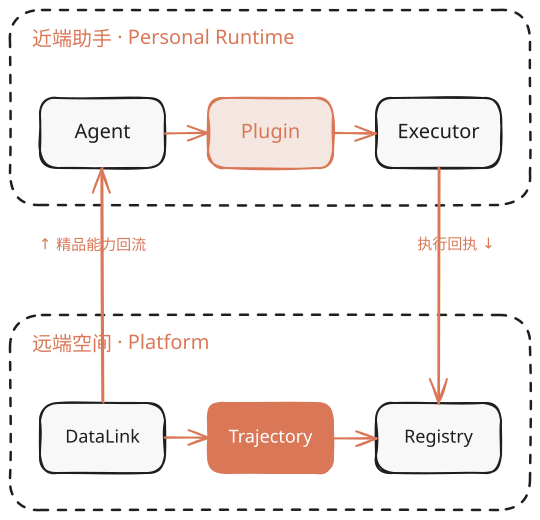
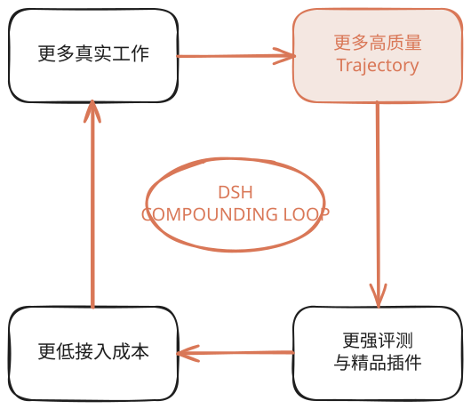

DSH / NEAR × REMOTE
把已有系统变成 Agent 可调用的精品插件：以统一数据底座承接业务，以 Trajectory 回流驱动评测与持续改进。
WHYJ · ARCHITECTURE / PRODUCT STRATEGY · 2026.08

管理 Session、模型循环、工具选择、用户追问与中断。
FUNCTION · 理解与编排 02加载 Skill、Tool、UI 与策略，把领域能力组合进个人工作台。
FUNCTION · 能力装配 03通过 API、浏览器、CLI 与文件系统执行真实业务动作。
FUNCTION · 靠近系统执行 04保留登录态和密钥，在不可逆动作前完成权限判断与审批。
FUNCTION · 信任与控制 05记录调用、回执与结果，先在本地脱敏，再可靠地回流远端。
FUNCTION · 可追溯回流文件、Cookie、工作目录与用户意图都不应被远端默认接管。
PRINCIPLE · LOCAL FIRST统一身份、能力发现、路由、配额和策略版本。
FUNCTION · 平台入口 02管理实体、引用、事件、对象和租户边界，而不是复制所有原始数据。
FUNCTION · 统一数据语义 03接收脱敏轨迹，支持检索、采样、回放和失败聚类。
FUNCTION · 真实反馈资产化 04用标准任务与历史失败轨迹评估正确性、安全、成本和延迟。
FUNCTION · 质量门槛 05管理签名、版本、依赖、权限声明、兼容矩阵与发布渠道。
FUNCTION · 可信分发它共享数据语义、评测方法与精品版本，不实时操控每一次本地点击。
PRINCIPLE · EVALUATE & DISTRIBUTE
一个工作台调用多个已有系统，结果可验证，登录态与数据仍受自己控制。
共享 Gateway、DataLink、评测与分发能力，把精力集中在领域动作。
真实 Traj 形成数据网络效应，精品插件建立质量与信任壁垒。
决定近端、远端与插件能否独立演进。
决定真实反馈能否安全沉淀为评测资产。
统一实体引用，而不是统一搬迁原始数据。
让“精品”成为可重复验证的工程结论。
关键不是连接更多系统，
而是让连接后的系统持续变好。
下一步：用一个真实插件跑通 Action → Receipt → Traj → Eval → Curated。